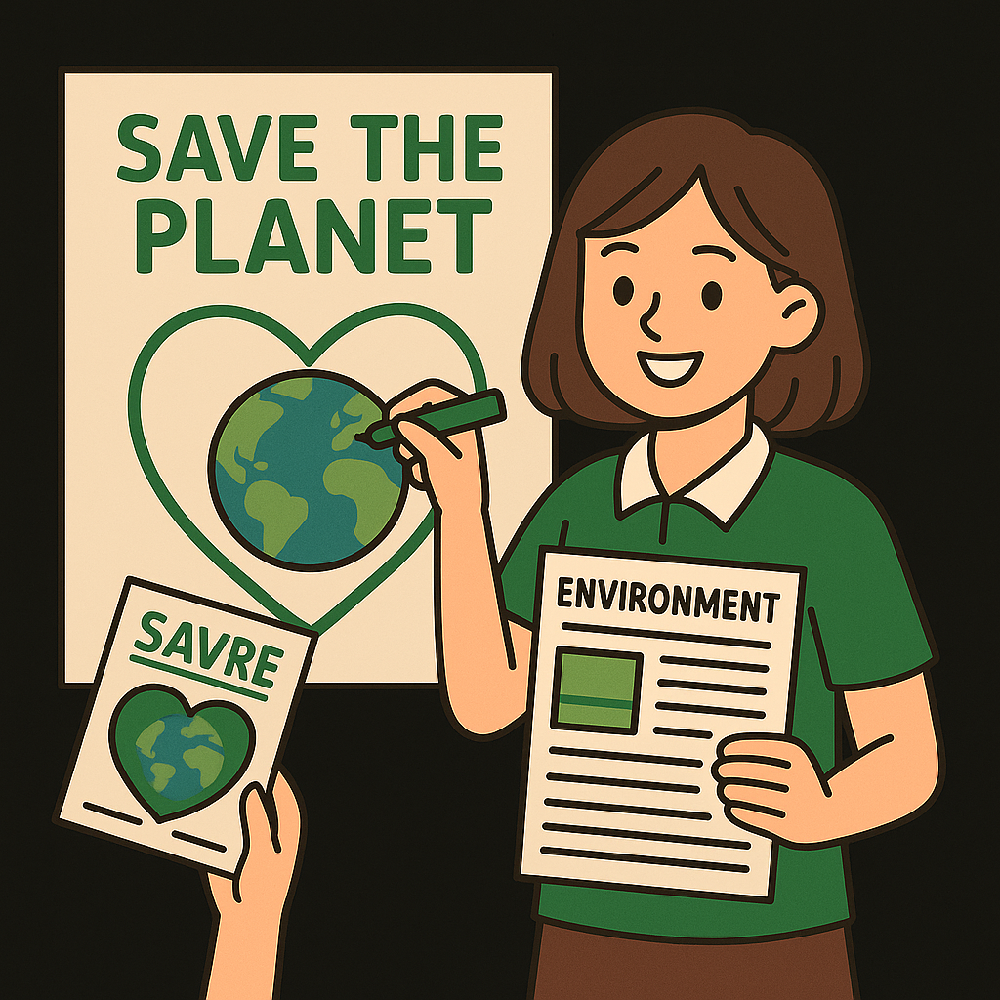
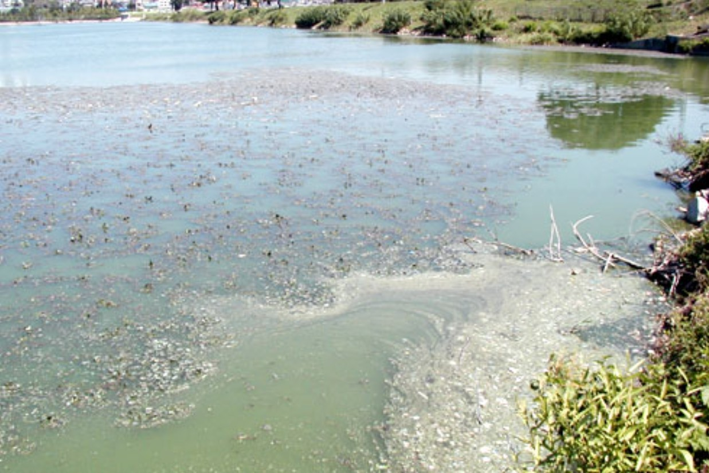
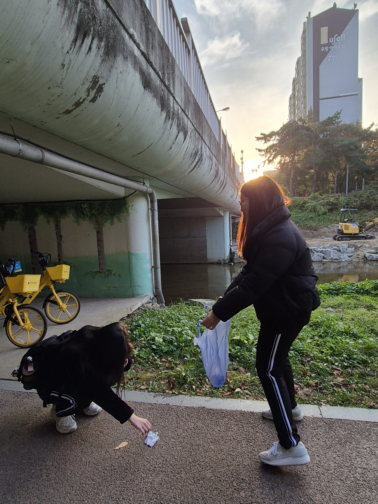
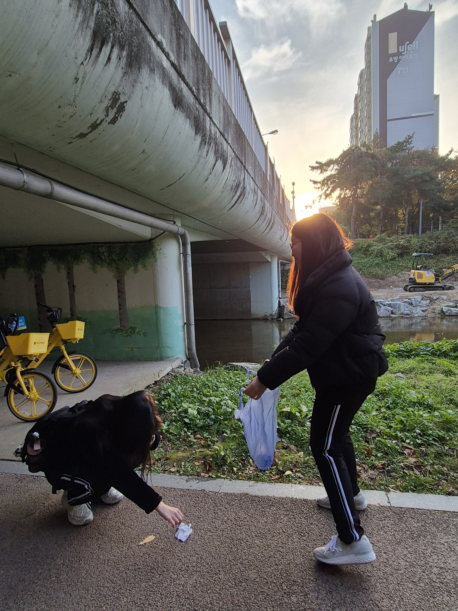
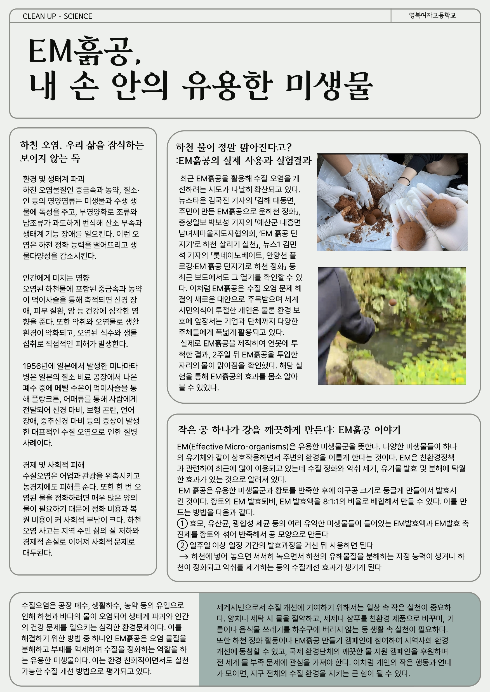
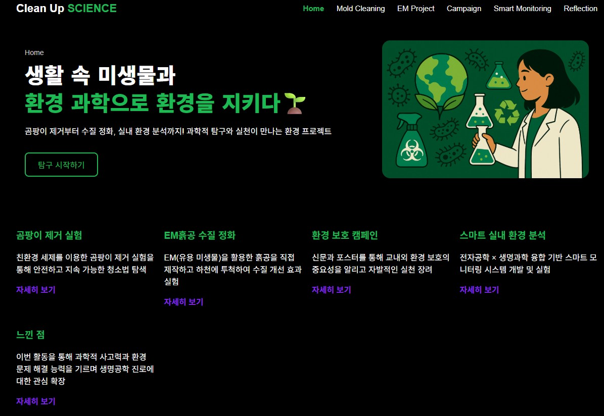

환경 보호 캠페인
작은 실천이 강을 살립니다 — 우리의 깨끗한 환경 만들기 프로젝트
하천 오염, 왜 심각한가?
하천에는 눈에 보이지 않는 오염물질들이 축적되며 악취, 부유물 증가, 산소 부족을 일으켜 생태계를 위협합니다. 또한 지역 이미지 저하, 경관 훼손, 관광·경제적 피해까지 이어질 수 있습니다.
Clean Up SCIENCE 캠페인의 목표
하천 오염을 직접 보고, 행동을 통해 변화를 만들어가는 것이 핵심입니다. 우리는 “학생이 먼저 움직이는 환경 보호 활동”을 목표로, 하천 주변 쓰레기 수거, 신문 제작, 홈페이지 제작 등 다양한 환경 캠페인을 펼쳤습니다.
우리가 실천한 환경 캠페인
- ✔ 서호천 쓰레기 수거 — 플로깅 활동으로 하천 주변 오염원 제거
- ✔ 하천 수질 관찰 — 변화 기록 및 시민 인식 제고
- ✔ EM 흙공 만들기 및 수질 정화 — 오염된 연못에 EM 흙공 투입하여 교내 환경 개선 참여
- ✔ 친환경 세제 만들어 곰팡이 제거 — 정수기 곰팡이 제거로 교내 환경 개선 참여
- ✔ 환경 신문 및 홈페이지 제작 — 환경 오염 문제를 알리고 해결책 제시
 

학생들이 직접 만든 환경 메시지
우리는 청소 활동과 함께 하천 오염의 위험성과 환경 보호의 필요성을 알리는 홍보 활동을 진행했습니다. 신문 및 홈페이지 제작은 환경 문제의 심각성을 많은 사람들에게 전달하는 중요한 도구가 되었습니다.


환경을 위해 내가 실천할 수 있는 것
- 플로깅 등 쓰레기 줍기 활동 참여하기
- 양치·세탁 시 물 절약하기
- 친환경 세제 사용하기
- 음식물 쓰레기 하수구 투기 금지
- EM 흙공 만들기 및 하천 정화 활동 참여
함께 환경을 지켜요!
당신의 작은 실천이 강과 생태계를 살릴 수 있습니다.